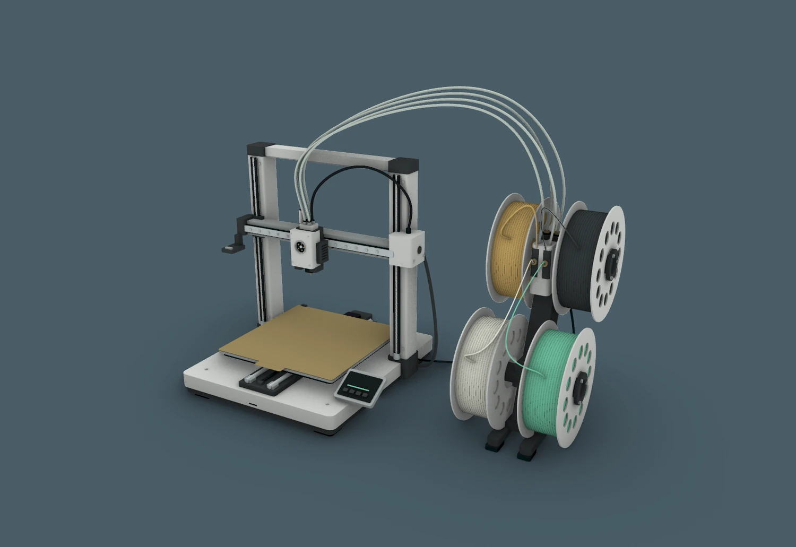
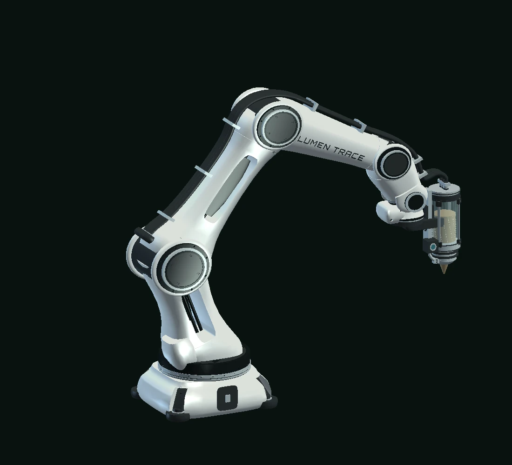

Move slowly to gather the field. Choose Repel to open a new path. Each trace changes what follows.
Tune the field
Shape the agents, their traces, and their response to you.
Portal pull gathers agents around the chapter links. Bloom adds a ripple when you enter a chapter.
Pointer, touch & arrow keys · illustrative agent model
The process is the plan.
Research premise
What if architecture grew through local decisions instead of a fixed final drawing?
Termite construction offers a model of indirect coordination through a changing environment.
Stigmergy
One action alters a shared field. That alteration becomes a cue for the next action. Repeated many times, small responses can produce an organized whole.
01 / SignalLeave a traceAct upon the environment
02 / ResponseRead the fieldChoose the next move
03 / FormAccumulatePattern emerges over time
Research model, after the termite-inspired principle of environment-mediated coordination. This is a design analogy, not a biological simulation of a real colony.
One action becomes the next instruction.
Select an action to see how an environmental trace connects otherwise independent agents. This is the coordination principle behind the research question.
An agent deposits a trace. The environment now contains information that was not present before.
Where the rules came from.
Literature to rule set
The study began with biocomputation and biomimicry, then focused on termite mound construction as a model of environmental feedback. Stigmergy became a way to turn biological observation into explicit design rules.
1959 / A concept from biology
The report traces stigmergy to Pierre-Paul Grassé’s account of termite construction: a change made to a shared environment can guide a later action. This became the project’s central question—how can accumulated traces participate in generating form?
Report §5.1–5.2 · p.13
From organism to operation.
2025 / An architectural inquiry
The Cornell independent study, advised by Professor Jenny Sabin, surveyed honeycomb, mycelium, ant nests, and termite mounds before focusing on decentralized construction. The aim was to abstract relationships into rules that could be drawn, coded, observed, and physically tested.
Aims and biological survey · pp.3–7
Form through feedback.
Precedents / A design process
The report discusses The Red Queen Hypothesis (Alborghetti and Erioli, 2014), Foam Making Sense (Salsi and Erioli, 2019), and TERMES (Werfel, Petersen and Nagpal, 2014). They frame the connection between agent rules, evolving geometry, and fabrication.
Precedent discussion · pp.15–16
01 / ObserveTermite construction
Read the mound as an evolving structure shaped by local actions and indirect signals.
02 / AbstractRule families
Sketch movement, deposition, pheromone, sensing, task, and environmental response rules.
03 / EncodeRhino + Python
Narrow the broad rule set into a testable 2D Grasshopper agent model.
04 / ExtendLumen Trace
Build an editable, repeatable desktop research environment around the tested ideas.
An earlier proposal: image → stimulus → geometry Read the research appendix +
The report’s appendix proposed sampling a termite image on a point grid. Brightness above a threshold would seed agents; a Hoopsnake loop would move them toward brighter locations and deposit geometry. The supplied GhPython test later used explicit start points, fixed targets, boid movement, and Builder Breps. These are two stages of the design’s development.
Sample image brightness
Filter starting points
Loop movement and deposits
Inspect trails and form
Original proposed pseudocode · pp.23–24
Idea, prototype, application.
Interactive rule lineage
Select a stage to see what the project proposed, what the custom Rhino script actually tested, and what the later app implemented.
Research rule library / 2025Concept
Local signal→Agent response→Changed field
A wider behavioural brief
The study boards proposed movement toward strong pheromone, avoidance of crowding, material deposition, signal decay, sensing, task switching, and heat or airflow feedback. These were design hypotheses; the first script implemented a narrower subset.
Evidence: independent-study boards 03–04 and written research report.
01 / THE LOGICLocal decisions → collective form
An environment that remembers.
Small rules. Open possibilities.
A point senses its surroundings. A direction changes. One trace becomes a cue for the next.
A live illustration of the project logic. Adjust attraction and separation to see how paths gather or spread.
Live field / illustrative modelTick 0000
Boundary / 2D planeAgentsTargetTrace
Movement. Attraction. Deposition.
Agents respond to nearby agents, a bounded environment, and attractor points. Builder paths become the basis for placing geometry in the Grasshopper study.
Drag the target or focus it and use arrow keys. Presets reset the same agents for comparison. This is a visual interpretation of the rule logic.
From rule to form.
Computational method
The study translates termite-inspired coordination into a two-dimensional, agent-based Rhino and Grasshopper workflow. Python logic tracks roles, motion, trails, and geometry placement.
Source: project Grasshopper definition and independent study, 2025
Select a step to trace it in the diagram below.
Place agents and pheromone points inside a boundary.
Combine alignment, cohesion, separation, and attraction.
Store agent trajectories as trails and interpolated curves.
Builder agents place Brep copies along their traversed paths.
Compare the emerging spatial pattern across iterations and inputs.
Initialize: create agents, assign roles, and define target points inside the boundary.
The first working field lived in Rhino.
From diagram to code
A custom GhPython script in Grasshopper tested the rule set. It created agents from start points, gave each a role, stepped them inside a boundary, stored their trails, and placed copies of a base Brep along Builder paths.
What the script received
A / P
Agent start points and pheromone target points
B / R
Base Brep geometry and an agent role list
Step
Movement speed
Avoid / Attract
Separation and attraction radii
boundary / reset
Containment curve and state restart
stop_distance
Fixed at 1.5 model units in the supplied script
The workflow board lists an Arrival input; the supplied script instead hardcodes stop_distance = 1.5. A target is marked reached when an agent enters that radius; the run stops once every target has been reached.
What the script computed
Boid alignment, cohesion, and separation were combined with attraction to fixed pheromone points. Scout, Builder, and Fabricator roles used different attraction radii. A persistent Python state held the agents, trails, reached targets, iteration count, and placed geometry between Grasshopper solutions.
For Builders, a movement vector selected a Brep face by its normal and dot-product score. The script translated a Brep copy toward the current path position. Trails became point histories and interpolated curves for inspection.
This original test did not implement the proposed heat and humidity feedback, dynamic task switching, or pheromone decay. Its Brep placement was translation-based, not full orientation matching.
How a path became geometry.
Interactive placement logic
Step through the simplified placement logic described in the 2025 study. The diagram is an explanatory reconstruction of the Rhino process.
01 / Trail sample
The Builder retains its current and previous positions along a path. Those samples define where a module may be placed.
How one decision becomes a structure.
The custom Python script turns inputs into repeated local actions. Follow the original logic through fixed targets, boid movement, stored trails, and translated Builder geometry.
Active stage
Begin with agents.
Initialize agents at start points. Assign Scout, Builder, or Fabricator roles and create persistent state.
Output
A population with roles, start positions, and memory.
Why it matters
The same starting conditions make successive runs comparable.
Tested in Rhino
Multiple starts and targets, role-dependent trajectories, boundary containment, path curves, and Brep sequences were evaluated through Grasshopper outputs and captured simulation states.
Observed limit
The study remained 2D, with fixed roles and static target cues. The script revisited every stored Builder trail segment on each update, accumulating repeated Brep copies. Bounded, incremental placement and orientation became clear development questions for the app.
A role changes what can be sensed.
The original script scales the attraction radius by role. Switch roles to see which fixed targets fall inside the sensing range. The drawing uses an illustrative base radius; the 0.8×, 1.0×, and 1.2× multipliers come from the script.
Scout senses the nearest target inside 0.8× the base attraction radius.
The Rhino test established the method; Lumen Trace turned it into a dedicated scenario workflow. The later Windows app adds editable starts, targets and boundaries, deterministic replay, a real pheromone grid, live metrics, optional module deposition, and offline fabrication inspection.
Inside the research instrument.
Real captures from the application connect the model to its interface. Move through the workspace, its boundaries, and the trails that record each run.
App walkthrough
Open a study.
Dashboard · Enter a workspace, reopen a study, and see the research toolkit.
Output
A study ready to open or continue.
Why it matters
Experiments have a place to start, return to, and compare.
Select a stage to follow the flow of information.
01 / Compose
Create or open a study. Draw a rectangle, circle, or polygon boundary; place multiple starts and targets; set each start’s count, role mix, radius, direction, speed, and seed offset.
02 / Simulate
Choose Scout, Builder, Repairer, and Fabricator roles. Tune motion and pheromone deposit, diffusion, decay, and sensing. Apply changes and restart from a reproducible seed.
03 / Observe
Follow continuous trajectories, colour by role or field properties, and inspect ticks, agent load, pheromone cells, FPS, memory, and exported metrics.
04 / Place
Enable role-filtered Brep deposition. New trail motion creates lightweight module instances subject to spacing, density, overlap, boundary, and placement limits.
05 / Inspect
Orbit deposited geometry, switch between solid, wireframe, transparent, and role views, then preview a selected fabrication recipe and articulated robot.
06 / Validate
Check toolpath timing, deposition settings, collision envelopes, and blocking issues. An unsafe move stops at the last accepted pose; the app does not silently reroute it.
01Compose
02Simulate
03Observe
04Place
05Inspect
06Validate
Compose a scenario: boundaries, starts, targets, roles, and a reproducible seed define the experiment.
Architecture of the transition. The 2025 GhPython study used fixed attractor points and persisted simulation state inside Grasshopper. The later .NET/WPF application has its own fixed-step engine, grid-based pheromone field, project persistence, live viewport, analysis, deposition, and fabrication modules.
Application documentation and model notes are linked at the end of this page. The app is an offline research and preview tool, not a certified machine controller.
A trace can outlast its maker.
Interactive field memory
Add a signal, then watch it spread and fade. Diffusion shares intensity with neighboring cells. Decay removes a fraction each step. In an agent system, sampling this changing field can influence the next move.
Try this: pause, set decay to zero, reset, then play. Total signal stays constant while the peak falls. Raise decay to make that memory disappear.
Educational 56 × 32 grid with sealed boundaries and arbitrary signal units. It isolates diffusion and decay; the browser model is separate from the app’s engine.
Tap to leave a traceDim → bright / increasing signal
Total signal
0.00
Peak cell
0.000
Steps
0
next = (1 − decay) × [current + diffusion × (neighbor mean − current)]
Four immediate neighbors contribute to the mean. Fixed color scale; display intensity is capped at 1.0. Values remain uncapped in the model.
Compose. Run. Compare.
Working in the app
The left panel controls the interface and view, the center holds the field, and the right panel defines the simulation. Scenarios, Simulations, Analysis, Fab Lab, and Settings organize the workflow. Saved parameters and seeds make a run repeatable.
Separate pattern from performance.
Reading a result
Ticks describe simulated progression; FPS and memory describe application operation. Trails and placements show spatial behavior. JSON and CSV preserve study data. A dense pattern alone does not establish structural, thermal, or material performance.
Paths become evidence.
Simulation output
Across the recorded study frames, simple motion rules produce different densities and path structures. The changing trails are the project’s primary design material.
Images: Emmanuel Appiah Acheampong, independent study presentation, 2025. Select an image to inspect it.
03 / THE MATERIALPath → layer → printed study
The accumulated trace.
Behaviour, made tangible.
An evolving path becomes a sequence of deposits. Each layer gives the pattern depth.
Six photographs from the original study show how selected trajectories became framed prints. All six remain visible while you focus on path density, branching, and overlap.
Horizontal concentrationCrossing trajectories
Central clusterBranching overlap
Vertical convergenceLayered accumulation
Printed path studies
Six material readings.
The framed studies hold different path configurations, from open crossings to clustered and nearly continuous traces.
Reading
Compare the six prints side by side, then select a focus below to follow a pair.
Translation
Selected trajectories become printed paths held within a square frame.
Limit
These studies show pattern and material presence; they do not establish structural performance.
From spool to spatial trace.
Bambu Lab A1 + AMS lite / modeled in Rhino
Watch the head move in X, the bed in Y, and the gantry in Z as a branching study takes shape. Select a filament, inspect the feed system, or move close to the nozzle.
Reference reconstruction from product photographs, with a 256 × 256 mm build plate. The path is illustrative; the archive contains no original G-code. Layers are 0.2 mm. The displayed bead is widened for clarity; playback speed is not a print-time estimate.

A1 + AMS lite / assemblyFilament held
Drag to orbit · arrow keys also work
Rhino model preview. Interactive 3D requires WebGL; sequence readouts remain available.
Ivory · spool 1 selected. Choosing a spool restarts the sequence.
X / toolhead
0.0mm
The carriage follows the path across the rail.
Y / build plate
0.0mm
The printed part moves with the bed beneath the nozzle.
Z / gantry height
130.0mm
Layer changes and travel lifts move the whole X beam.
Rhino master: 279 closed solids · adjacent coplanar faces merged · screen clears the bed by 11 mm. A1 specifications · AMS lite reference. One selected spool feeds each replay; automatic colour changes and purging are outside this demonstration.
Two robots. One shared trace.
Lumen Trace Designed A6 / cooperative print study
Two copies of the Rhino-modeled arm print opposite zones of one shared plate. They work in parallel, then take turns joining the central strip while the other arm holds clear. The joining role alternates with each layer.
An illustrative print sequence using the existing A6 model and calibrated tool offset. Layers are 0.6 mm; bead width and feed markers are enlarged for clarity. Playback uses compressed time.

Designed A6 / cooperative print cellMaterial flow held
Drag to orbit · arrow keys also work
Model preview. Interactive 3D requires WebGL; sequence readouts remain available.
Ivory selected. The pellet cartridge feeds one material per replay.
Robot A · ReadyRobot B · ReadyHuman operator · Monitoring shared build
Human oversight / shared objectThe operator watches both work zones and their joining strip. Hold the illustrative cell to inspect the current layer, then release it to continue.
Robot A / base angle
0.0deg
The mint-marked arm prints the near zone of the same object.
Robot B / base angle
0.0deg
The amber-marked arm prints the opposite zone of that object.
Robot A / nozzle height
45.0mm
Material flows on the path; travel lifts clear the part.
Two instances of the existing Designed A6 revision 8 share one stationary plate. Rigid joints and flexible services follow each toolpath. Coordination is illustrative; this is not a machine-control program or a verified industrial cell.
The experiment stays traceable.
Research notes
The interactive diagrams explain the original Rhino logic. The application guide documents the later workspace, saved scenarios, field controls, and export workflow.
Original research documents inform this case study. Browser simulations are explanatory reconstructions. App screenshots are archived captures, and the printer is a Rhino reference model.
A method for asking better questions.
What remains
The study demonstrates how local behaviours can generate legible spatial patterns, then tests a translation from digital trace to physical prototype.
ObservedDifferent agent roles produce distinct trails; builder paths support coherent Brep sequences and printed studies.
BoundedThe original simulation is two-dimensional. It does not model vertical stacking, exact material behaviour, or real termite colonies.
NextThe app extends field feedback and guarded fabrication preview. Coupling the model to measured material behaviour, evaluating architectural performance, and testing physical fabrication remain future research.
Emmanuel Appiah Acheampong Cornell University / Independent study / 2025 Advisor: Professor Jenny SabinRhino · Grasshopper · Python Later extension: Lumen Trace / 2026Get in touch